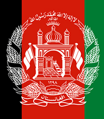
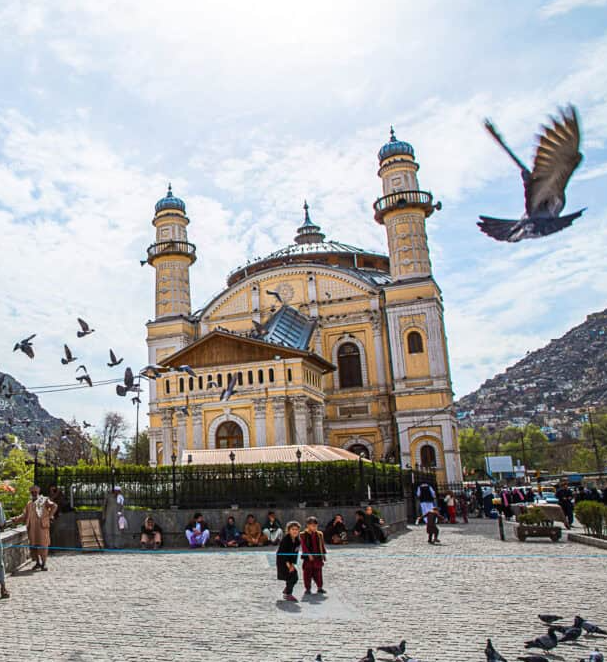

Kabul City
4.877.020 Resident
Afganistan
34°31′LU 69°10′BT
Get More Information

Kabul City
View all citiesKabul is the capital of Afghanistan and one of the most important cultural, political, and economic centers in South and Central Asia.
Bandung
Asia Africa
City Network
Quick Link
Get in touch
Need Information?
+62 81318667479
bapperida@bandung.go.id
© BAACN - All rights reserved